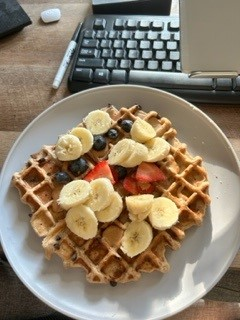
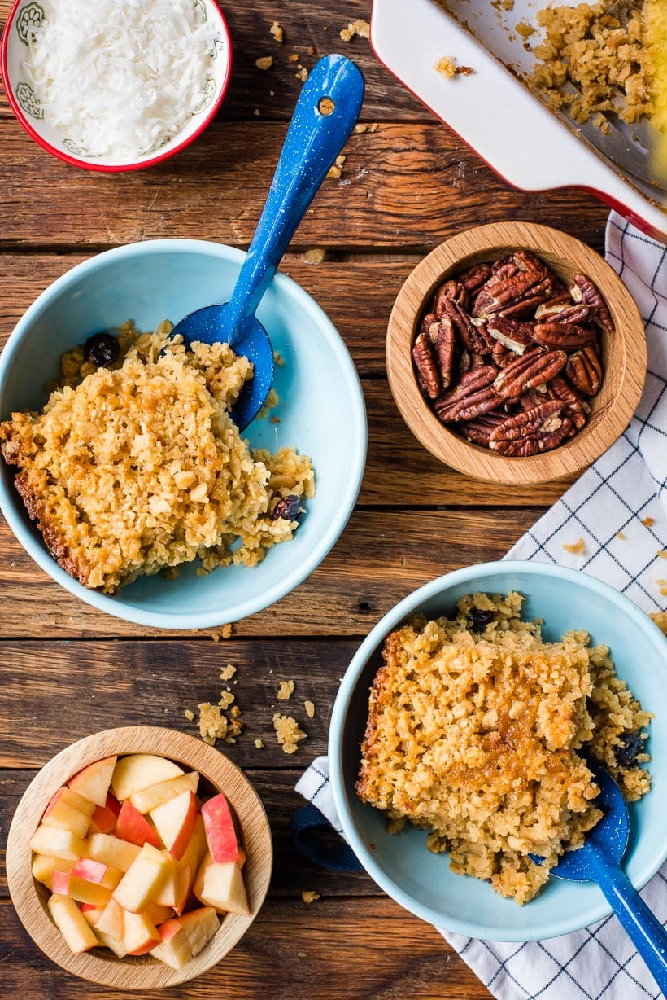

Creates 3-4 servings that stay in the fridge. I always add more almond milk into leftover batter before I cook on days 2-4. Recipe is gluten free but I use half AP and half GF flour.
I make 1/2 this recipe and that creates 6-9 servings. I sub at least half the butter with applesauce and reduce sugar to my liking.
This makes about 6 pancakes. So I would 1.5x this recipe for two people to enjoy breakfast.